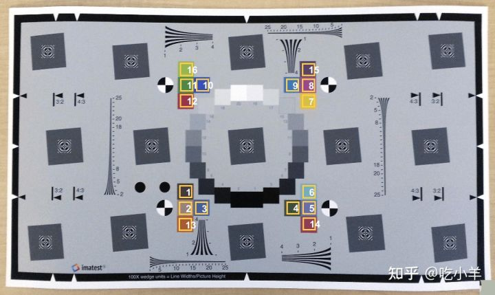
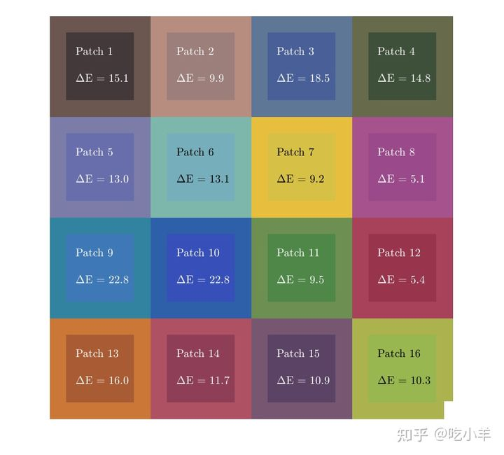
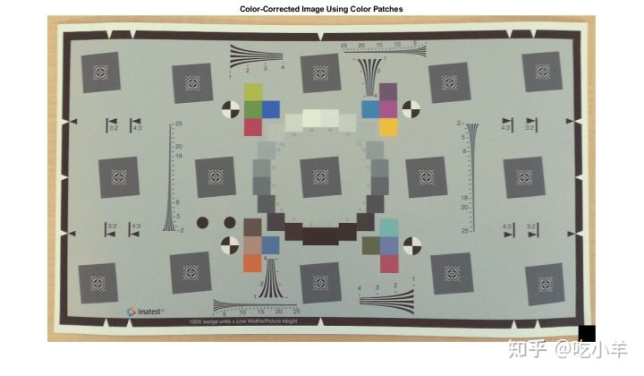
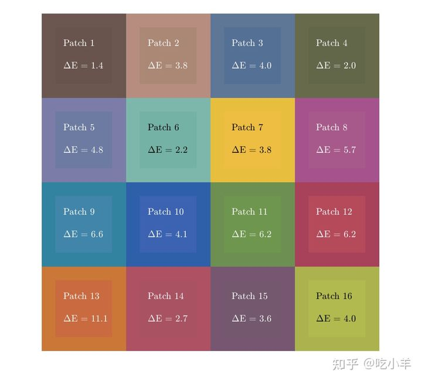
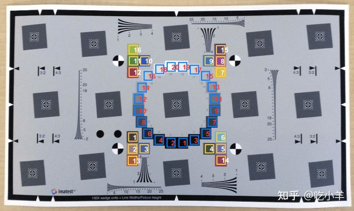
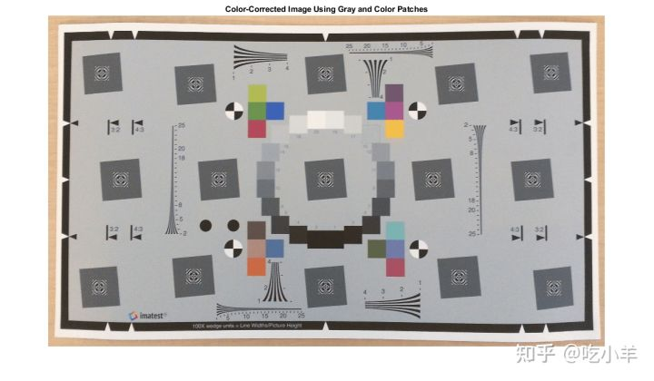
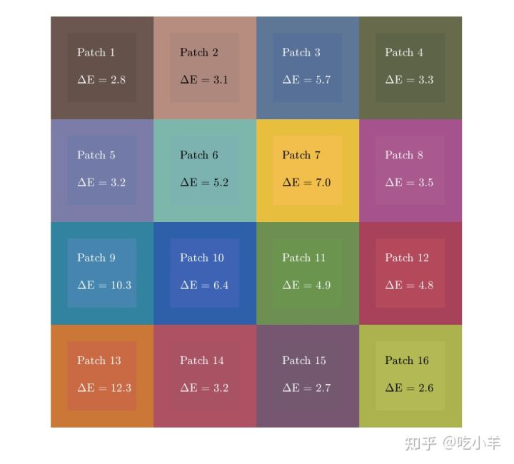

Home
本示例显示如何调整图像的颜色，以更好地匹配Imatest ® 中边缘空间频率响应 (eSFR) 测试图上的一组标准化颜色。
从测试图表图像中获取色彩校正矩阵
读取测试图表的图像。
I = imread('eSFRTestImage.jpg');
创建存储有关测试图表信息的esfrChart对象。显示图表，突出显示 16 个色块。图像带有蓝色调。
chart = esfrChart(I);
displayChart(chart,'displayEdgeROIs',false, ...
'displayGrayROIs',false,'displayRegistrationPoints',false)

使用measureColor函数测量 16 个色块的颜色准确度。该函数还返回用于执行颜色校正的颜色校正矩阵。
[colorTable,ccm] = measureColor(chart);
在色块图上比较测量颜色和参考颜色。Delta_E值越接近1，色差越不易察觉。
displayColorPatch(colorTable)

颜色校正测试图表图像
对原始测试图图像进行颜色校正并显示结果。
I_cc = imapplymatrix(ccm(1:3,:)',I,ccm(4,:));
imshow(I_cc)
title('Color-Corrected Image Using Color Patches')

创建一个esfrChart对象，用于存储有关颜色校正测试图表的信息。测量 16 个颜色校正色块的颜色准确度。
chart_cc = esfrChart(I_cc); colorTable_cc = measureColor(chart_cc);
比较色块图上的校正颜色和参考颜色。颜色校正图像的测量颜色误差，delta_E，小于原始图像的。因此，该图像中的颜色更符合参考颜色。但是，图表现在整体呈黄色，图像的对比度降低。
displayColorPatch(colorTable_cc)

使用灰色补丁改善色彩校正
您可以通过在最小二乘拟合中包含灰色块和色块来改进颜色校正。显示原始图表，突出显示 20 个灰色块和 16 个色块。
displayChart(chart,'displayEdgeROIs',false, ...
'displayRegistrationPoints',false)

获取颜色和灰度补丁的参考 Lab 值，这些值存储在eSFR 图表对象的ReferenceColorLab和ReferenceGrayLab属性中。将这些值转换为 RGB 颜色空间。
referenceLab = [chart.ReferenceColorLab; chart.ReferenceGrayLab]; referenceRGB = lab2rgb(referenceLab,'outputtype','uint8');
使用measureNoise函数，测量 20 个灰色块中每一个的平均灰度值。
noiseTable = measureNoise(chart);
measuredGrayRGB = [noiseTable.MeanIntensity_R, ...
noiseTable.MeanIntensity_G, ...
noiseTable.MeanIntensity_B];
连接颜色和灰度色块的所有测量的 RGB 颜色值。
measuredColorRGB = [colorTable.Measured_R, ...
colorTable.Measured_G, ...
colorTable.Measured_B];
measuredRGB = [measuredColorRGB; measuredGrayRGB];
ccm_cc = double([measuredRGB ones(36,1)]) \ double(referenceRGB);
色彩校正并显示结果。图表不再有黄色调，图表的整体外观得到改善。
I_cc2 = imapplymatrix(ccm_cc(1:3,:)',I,ccm_cc(4,:)');
imshow(I_cc2)
title('Color-Corrected Image Using Gray and Color Patches')

比较色块图上的校正颜色和参考颜色。一些测得的颜色误差有所减少，而另一些则有所增加。
chart_cc2 = esfrChart(I_cc2); colorTable_cc2 = measureColor(chart_cc2); displayColorPatch(colorTable_cc2)

参考文献
[1] Imatest®. "Esfr". https://link.zhihu.com/?target=https%3A//www.imatest.com/mathworks/esfr/
======================================================================
我的测试结果及程序
下面是我测试的代码：

注：本文根据MATLAB官网内容修改而成。